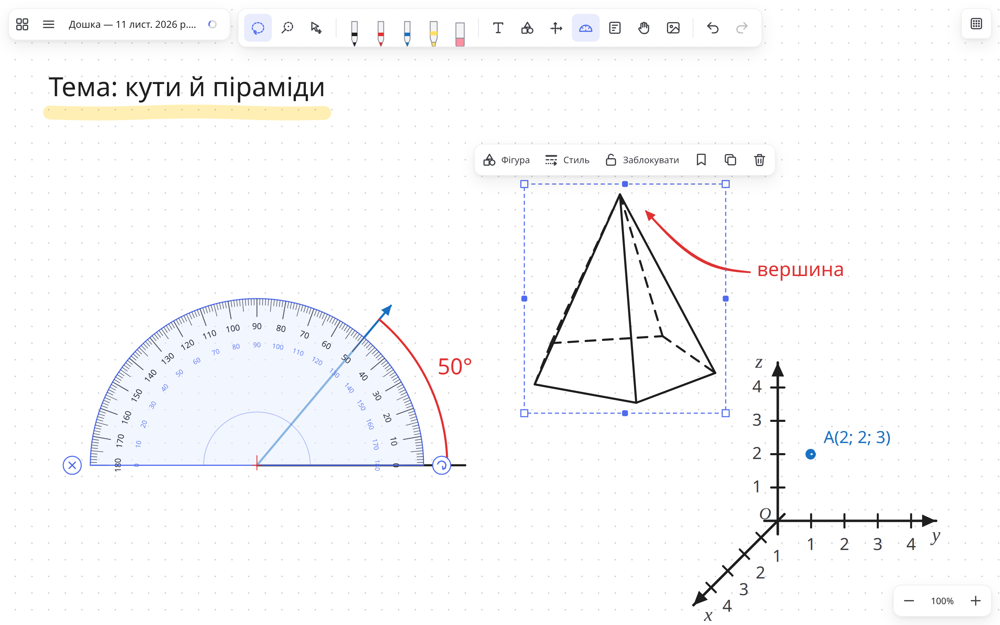
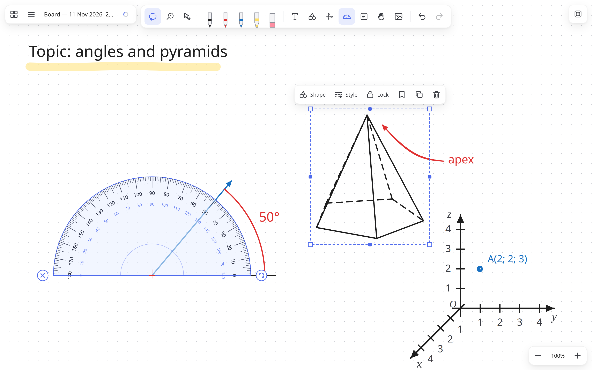

Нескінченна дошка для графічного планшета
Пишіть пером як на папері, кресліть із транспортиром, будуйте фігури й координати. Для вчителів і всіх, хто думає рукою. Безкоштовно, без акаунта й без інтернету — і жоден рядок не загубиться, навіть коли зникне світло.


Усе для уроку на одній дошці
Зроблено для вчительки з планшетом Wacom, якій бракувало Microsoft Whiteboard. Тепер — для всіх.
Перо з натиском
Векторні лінії не розмиваються при збільшенні. Видно, де зависло перо, долоня не малює.
Транспортир і циркуль
Дуги вздовж краю з підписаними градусами, промені під точним кутом, циркуль для кіл і дуг потрібного радіуса. Кінці ліній можна тягнути.
Фігури та 3D-тіла
Куб, призма, піраміда, циліндр, конус, куля — з пунктирними невидимими ребрами. Основа піраміди й призми — з будь-якою кількістю кутів, її можна змінити потім.
Координати
Координатна пряма, площина і просторові осі x, y, z — готові шаблони або свої межі й масштаб.
Текст і зображення
Друкуйте прямо на дошці й виділяйте слова кольором, розміром, жирним. Картинки й скриншоти — через Ctrl+V або перетягуванням.
Бібліотека дошок
Усі дошки з прев'ю, пошук, кольорові теги (наприклад «5-А», «Геометрія»), закріплені дошки, кошик на 30 днів.
Шаблони
Збережіть «Дано / Знайти / Розв'язання» чи будь-що інше раз — і вставляйте в будь-яку дошку.
Виділення, групи, замок
Ласо або «пензель» для виділення, групування, а замок захищає важливе від випадкового стирання.
Для Wacom та інших планшетів
Гумка на зворотному кінці пера, налаштування бічних кнопок, гарячі клавіші для ExpressKeys, що працюють на будь-якій розкладці.
Світло зникло — дошка лишилась
Кнопки «Зберегти» не треба: Inkboard зберігає кожну дошку сам, кожні кілька секунд.
- Автозбереження на диск щонайпізніше через 5 секунд, навіть поки ви малюєте.
- Безпечний запис: файл ніколи не лишається напівзаписаним, попередня версія завжди поруч.
- Історія версій кожні 10 хвилин — можна повернутися до будь-якої.
- Резервна папка на флешці чи в Google Drive / OneDrive — копія оновлюється сама.
- Експорт у PNG і PDF — роздати учням або надрукувати.
Перевірено «висмикуванням з розетки»: після примусового вимкнення дошка відкривається з усіма лініями.
Завантажити Inkboard
Встановіть один раз — далі на Windows і Linux (AppImage) нові версії встановлюються самі.
Windows
Windows 10 / 11. Програма ще не підписана, тож з'явиться «Windows захистив ваш ПК» — натисніть Докладніше → Усе одно запустити.
macOS
Перетягніть у «Програми», потім правий клік → Відкрити. Якщо macOS пише, що програма пошкоджена: xattr -cr /Applications/Inkboard.app
Linux
Для AppImage на Ubuntu 24.04+: sudo apt install libfuse2t64 потім chmod +x і запуск.